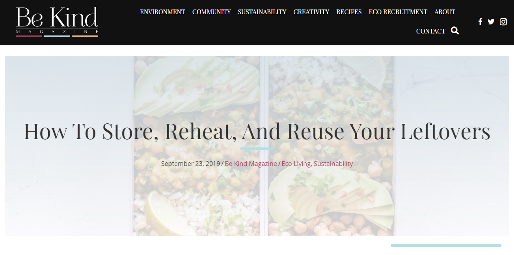
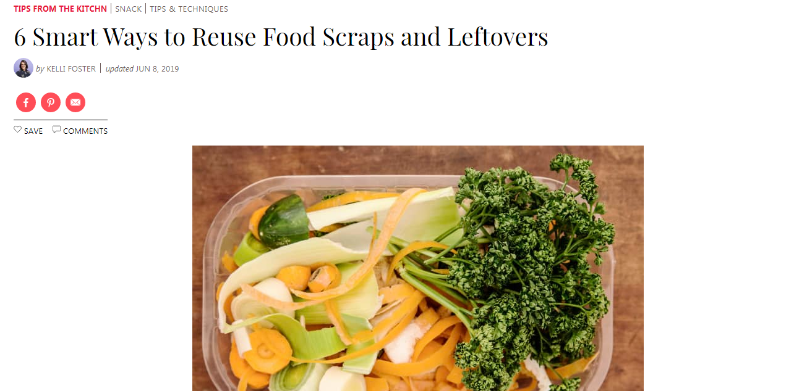
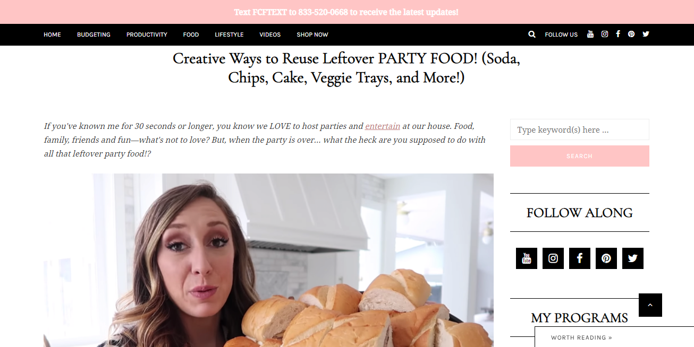
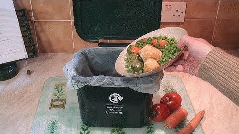
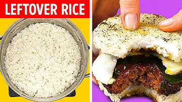

Home
About Us
Charities we Work With
Avoiding Food Wastage
Register a Pickup
Some extra links
For avoiding wastage





FoodWire
© All Rights Reserved. Solvify 2020
Tagore International School
Vasant Vihar